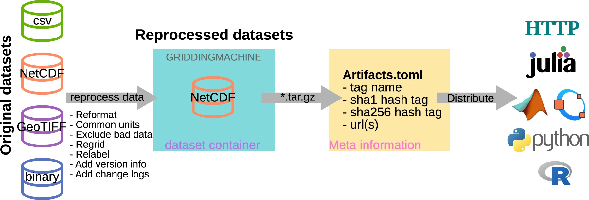

Researchers are spending way too much time in finding, formatting, and reusing public data. The ever increasing amount of data, various forms of data, and different layouts of data make this problem even more serious. While the intention of sharing data within the community is to promote future research, the increasing fragmentation makes it harder and harder for researchers to find and reuse them, particularly for newbies. Taking my personal experience as an example, to collect the global datasets for the CliMA Land Model, we spent weeks and months to identify which datasets to use, download the data from different sources, standardize the datasets, and learn how to read the datasets correctly with different formats (such as NetCDF, GeoTIFF, CSV, and binary) with different programming languages. Unfortunately, researchers may need to repeat this tedious work again and again, even for the same datasets (if one forgot where the data is stored or how it has been processed).

Aiming towards minimizing the effort involved in the data reuse, we started the GriddingMachine project by
- Collecting the data from various sources,
- Processing the data to a uniform format (NetCDF),
- Storing the reprocessed data on a public server, and
- Distributing the datasets via different programming languages.
Each dataset is labeled with a unique tag that describes
- Type of the dataset (e.g., leaf area index, biomass, and etc.),
- Spatial resolution (e.g., 5X means 0.2° × 0.2° grid),
- Temporal resolution (e.g., 1Y means 1 year, 1M means 1 month),
- Year of the data, and
- Version of the data (from different publications).
One can simply look up the available dataset tags (and suggest new datasets) through our Github repository.
With the unique tag, one can query the data directly via function query_collection, for example
query_collection("LAI_MODIS_2X_8D_2020")for the global leaf area index of the year 2020, and the dataset will be downloaded automatically. Alternatively, one can query data only for a site using the latitude and longitude without downloading the dataset, for example,
request_LUT("LAI_MODIS_2X_8D_2020_V1", 34.1478, -118.1445)for the leaf area index of the year 2020 at Pasadena, CA, USA. See our published work (Wang et al., 2022) and online documentation for more information about how to use GriddingMachine. It supports Julia, Matlab, Octave, Python, and R.
GriddingMachine makes it way easier to reuse the community-based datasets, as users are waived from data collection, formatting, and management. Given the aims of GriddingMachine, we welcome the contributions of globally gridded data to our collection.